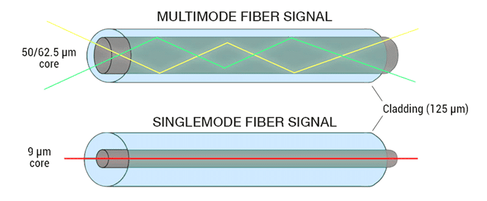

Single Mode နဲ့ Multimode ဆိုတာဘာလဲ?
Optical Fiber (အလင်းဖြင့် Data ပို့ဆောင်သော Fiber) တွေကို Light Mode (အလင်းသွားလာပုံ) အရ အဓိကအားဖြင့် Single Mode Fiber (SMF) နဲ့ Multimode Fiber (MMF) ဆိုပြီး နှစ်မျိုးခွဲနိုင်ပါတယ်။

နှစ်မျိုးလုံးဟာ Light Signal (အလင်းအချက်ပြမှု) ကို အသုံးပြုပြီး Data Transmission (Data ပို့ဆောင်ခြင်း) ပြုလုပ်ပေမယ့် Core Size (အတွင်းပိုင်းအရွယ်အစား)၊ Transmission Distance (ပို့ဆောင်နိုင်သောအကွာအဝေး) နဲ့ အသုံးပြုတဲ့ Network Application (Network အသုံးချမှု) တွေမှာ ကွာခြားပါတယ်။
Single Mode = Core သေး + Distance ရှည်
Multimode = Core ကြီး + Distance တို
Single Mode Fiber (SMF)
Single Mode Fiber (SMF) ဆိုတာ Light Mode (အလင်းသွားလာမှုပုံစံ) တစ်မျိုးတည်းနီးပါး ဖြတ်သန်းနိုင်အောင် Core Size (Core အရွယ်အစား) သေးငယ်စွာ ပြုလုပ်ထားတဲ့ Fiber ဖြစ်ပါတယ်။
ပုံမှန် Single Mode Fiber ရဲ့ Core Diameter (Core အချင်း) က ခန့်မှန်းအားဖြင့် 8–10 µm ဝန်းကျင် ဖြစ်ပါတယ်။
SMF ကို Long Distance Network (အကွာအဝေးရှည် Network)၊ Telecom Network (ဆက်သွယ်ရေး Network)၊ FTTH (အိမ်သုံး Fiber Internet) နဲ့ Internet Backbone (အင်တာနက်အဓိကကွန်ယက်) တွေမှာ အများဆုံးတွေ့ရပါတယ်။
Small Core → Long Distance → High Performance
Multimode Fiber (MMF)
Multimode Fiber (MMF) ဆိုတာ Fiber Core အတွင်းမှာ Light Mode (အလင်းသွားလာမှုပုံစံ) မျိုးစုံ ဖြတ်သန်းနိုင်တဲ့ Fiber ဖြစ်ပါတယ်။
Multimode Fiber ရဲ့ Core Diameter (Core အချင်း) က ပုံမှန်အားဖြင့် 50 µm သို့မဟုတ် 62.5 µm ဖြစ်ပါတယ်။
MMF ကို Data Center (Data စင်တာ)၊ LAN (Local Area Network) နဲ့ အဆောက်အအုံအတွင်း Short Distance Network (အကွာအဝေးတို Network) တွေမှာ အသုံးများပါတယ်။
Large Core → Short Distance → Network / Data Center
Single Mode vs Multimode နှိုင်းယှဉ်ချက်
| အချက် | Single Mode (SMF) | Multimode (MMF) |
|---|---|---|
| Core Size | 8–10 µm | 50 / 62.5 µm |
| Light Mode | Single Mode | Multiple Modes |
| Distance | Long Distance | Short Distance |
| Common Application | FTTH / Telecom / Backbone | LAN / Data Center |
| Typical Wavelength | 1310 / 1550 nm | 850 nm |
SMF က ဘာကြောင့် အကွာအဝေးပိုရှည်တာလဲ?
SMF ရဲ့ Core Size သေးတဲ့အတွက် Light Propagation (အလင်းသွားလာမှု) ကို ပိုမိုတည်ငြိမ်စွာ ထိန်းချုပ်နိုင်ပါတယ်။
Multimode Fiber မှာတော့ Light Mode မျိုးစုံဟာ Fiber အတွင်းမှာ လမ်းကြောင်းမတူဘဲ သွားလာနိုင်ပါတယ်။ ဒီအခြေအနေကြောင့် Modal Dispersion (Mode များကြောင့် Signal ပြန့်ကျဲခြင်း) ဖြစ်နိုင်ပြီး အကွာအဝေးရှည်လာတဲ့အခါ Signal Quality (Signal အရည်အသွေး) ကို ထိခိုက်စေနိုင်ပါတယ်။
ဘယ်အချိန်မှာ ဘယ် Fiber ကိုရွေးမလဲ?
- FTTH → Single Mode Fiber
- Telecom Network → Single Mode Fiber
- Internet Backbone → Single Mode Fiber
- Data Center → Multimode Fiber ကို Short Distance အတွက် အသုံးများ
- Building LAN → Network Requirement ပေါ်မူတည်ပြီး SMF / MMF နှစ်မျိုးလုံး အသုံးပြုနိုင်ပါတယ်။
Beginner အတွက် သိထားသင့်တဲ့ Technical Terms
| Technical Term | အဓိပ္ပါယ် |
|---|---|
| Single Mode | Light Mode တစ်မျိုးတည်းနီးပါး သွားလာသော Fiber |
| Multimode | Light Mode မျိုးစုံ သွားလာနိုင်သော Fiber |
| Core Diameter | Fiber Core ရဲ့ အချင်း |
| Modal Dispersion | Mode များကြောင့် Signal ပြန့်ကျဲခြင်း |
| Wavelength | Light Wave ရဲ့ လှိုင်းအလျား |
| µm | Micrometer အတိုင်းအတာ |
SMF → Small Core → Long Distance → Telecom / FTTH / Backbone
MMF → Large Core → Short Distance → LAN / Data Center
Quick Summary
Single Mode Fiber နဲ့ Multimode Fiber နှစ်မျိုးလုံးဟာ Optical Fiber Communication (အလင်းဖြင့် ဆက်သွယ်ရေး) အတွက် အသုံးပြုကြပါတယ်။
SMF မှာ Core Size သေးပြီး Long Distance Transmission (အကွာအဝေးရှည် Data ပို့ဆောင်မှု) အတွက် သင့်တော်ပါတယ်။
MMF မှာ Core Size ကြီးပြီး Short Distance Network (အကွာအဝေးတို Network) တွေမှာ အသုံးများပါတယ်။
Single Mode နဲ့ Multimode ကို နားလည်ပြီးရင်
Attenuation ကို ဆက်လက်လေ့လာနိုင်ပါတယ်။